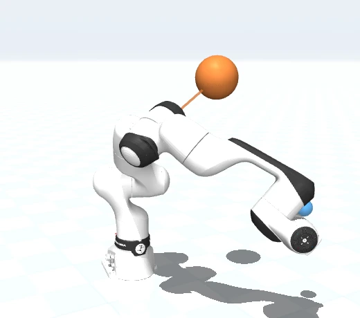
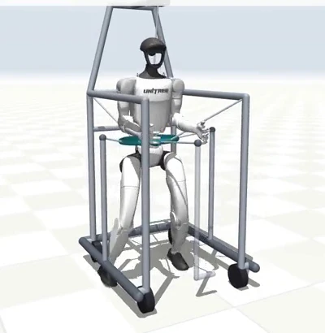
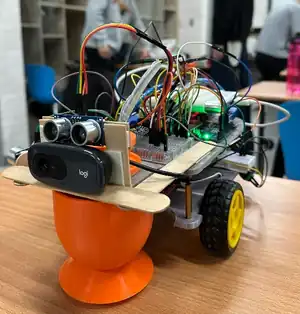

Robotics · Embodied AI
Chuan-Han Li
I build robotic systems across perception, planning, and reliable autonomy.
chuanhan1013.github.io

Whole-arm avoidance · illustration
Humanoid manipulation

Balance assistance

Mobile robot